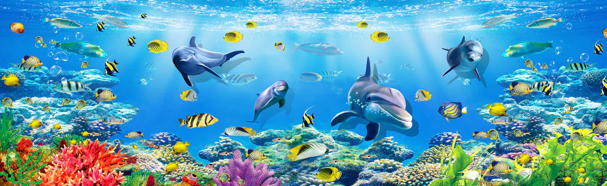
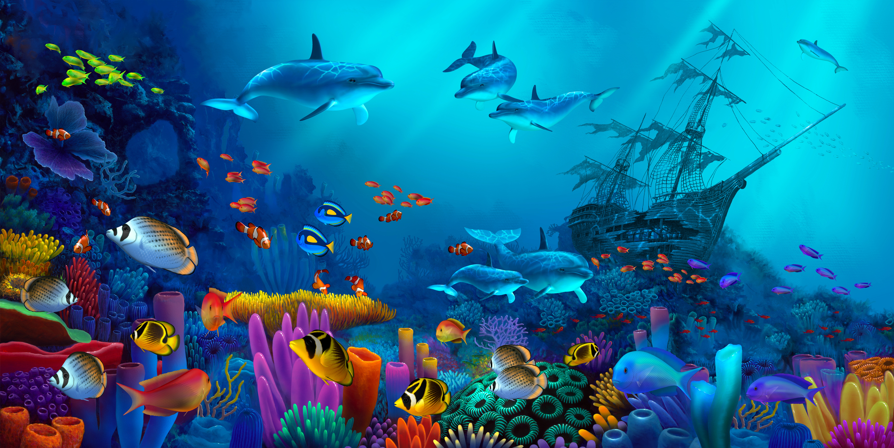

The ocean is home to an astonishing variety of life—from microscopic plankton drifting in sunlit waters to giant whales roaming the deep. In this section, explore the diverse creatures that inhabit our seas, learn how they survive in some of the planet’s most extreme environments, and discover why protecting marine ecosystems is vital to life on Earth.
Learn MoreEvery day, millions of tons of waste enter our oceans—plastic, chemicals, oil, and more—threatening marine life and the health of our planet. Pollution affects everything from the tiniest plankton to the largest whales, and its impact reaches even the most remote parts of the sea. In this section, explore the sources and consequences of ocean pollution, understand how it affects marine ecosystems, and learn what we can do to protect and restore the ocean for future generations.
Learn More
The ocean is vital to life on Earth—it produces most of our oxygen, regulates the climate, and supports incredible biodiversity. But today, it faces growing threats from pollution, overfishing, and climate change. Ocean conservation is about protecting these fragile ecosystems and ensuring a healthy, thriving sea for generations to come. In this section, discover the efforts being made around the world to safeguard marine life, preserve habitats, and take action for a sustainable future.
Learn More